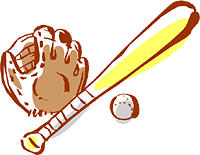
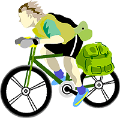

（準備中）

|  |
作文ワールドⅤ スポーツ作文 (3) も く じ |
 |
スポーツ作文（１） スポーツ作文(２)
作文ワールドⅠ（原点） Ⅱ（１人１人の作文）
作文ワールドⅢ（社会科作文） Ⅳ（理科作文） Ⅵ（七五の四行詩）
Ⅶ（図工作文） Ⅷ（エトセトラ） Ⅸ（家庭科作文）
Ⅹ（作文のこころ）
| Ⅰ 自転車少年（中1・２ 光くん） | Ⅱ スポーツ少年・少女たち |
| １．「自転車」 ２．「センチュリーラン」 ３．「いろは坂」 ４．「四日市ロードレース」 ５．「ツール・ド・オキナワ」 ６．「沖縄一周」 ７． |
１．「野球塾」 （小５ 瞬太郎くん） ２．「拳法」（１） （小５ 雅樹くん） 「拳法」（２） ３．「剣道」（１） （小５ さくらさん） 「剣道」（２） ４．「空手の試合」 （小６ 謡さん） ５．「新体操の技」 （小４ 真理子さん） 「新体操合宿」 ６．「陸上教室」 （小４ 雄翔くん） ７． |
「東日本大震災」の作文・第１部 第２部・第３部
作文打出の小づち 総もくじ
小学生の作文教室 作品展示場 トップページ
光くんは大の自転車好きで、現在沖縄に住んでいる。
暇さえあれば自転車に乗っているほどで、
その足は沖縄本島を駆けめぐるほか、
本州にまで及んでいる。
「自転車紀行」とでも呼ぶべきものを紹介しよう。
まずは、序論から。
| 添削例・諸注意 | |
| ぼくにとって、自転車は生活の足で、体力さえあればどんな遠くにでも行けるツールです。過去に沖縄の３分の２を自転車で走り、様々なものを見聞し、いろいろな食べ物も味わってきました。 ぼくは小学生のころは、自転車は友だちの家などの近場へ行く道具だと思っていましたが、中学生になって新しい自転車を手に入れて、価値観が変わりました。自転車は、自らの体力で遠くに行ける道具になりました。自らの力で目的地に着くと、達成感があります。 危険もあります。トラックが顔すれすれに走ってきて、顔にぶつかりそうなこともありました。土地の人にスピードの出しすぎを注意されることもありました。 メンテナンスをしないと壊れるのに、ぼくはめんどくさいと思って、直そうとも思いませんでした。ある日、自転車が壊れた時に、直し方がわからず、困りました。そこで、自転車のことを勉強しましたが、何回やっても失敗しました。そのうち、あることに気付きました。自転車を壊さないためには日ごろのメンテナンスが必要なのだということに。 ぼくは沖縄のいろいろな場所へ行きました。６年生のころは家にこもりがちでしたが、自転車によって、心が開けるほどに成長できたと思います。ぼくはこれからもいろいろな場所へ行き、様々なものを味わおうと思います。自分で自転車の修理ができるようになって、サイクルイベントにも参加していこうと思います。 |
新しい世界がここから開ける。
| 添削例・諸注意 | |
| １月１７日、「美ら島オキナワセンチュリーラン２０１６」がありました。天候は雨のち曇りで、今にも雨が降り出しそうでした。会場は家から20㎞北に行った所にある、恩納村コミュニティーセンターです。僕は自転車屋さんのチームで走りました。１８０㎞のセンチュリーコースと１００㎞のシーサイドコースがあり、僕はシーサイドコースを選びました。このコースは恩納村から北に向かって走り、名護市で本部半島を反時計回りに１周して恩納村にもどります。途中20㎞ごとに４つのチェックポイントがあります。 午前８時に会場に到着し、受付をすませて自転車屋の皆さんに合流しました。スタート地点に集まるまで、会場にある自転車を見て回りました。 午前９時にスタートし、僕は先頭に追い付きたいということで頭がいっぱいで、速度を上げすぎて、１０㎞地点で疲れてしまいました。いっしょに走っていたチームのMさんから補給食をもらい、あとの７人を待つ間、体力を少し回復させました。残りの10㎞を走り、20㎞地点に着いた時、Mさんに自分の体に合うようにサドルを調整してもらい、皆さんより先に次のチェックポイントに行くことにしました。 走っていると、ずっと先が見えない道と海が続いて、この道には終わりがないのかと思いました。やっと民家が見えた時、とてもホッとしました。人の気配のない所を走っていると、突然雨が降り出して、服と靴がびしょぬれになりました。自転車がすべることもあるので、慎重に走りました。 雨の中を走って、2番目のチェックポイントに着くと、かわいい犬が２匹いて、とてもいやされました。走り出そうとした時、チームの人たちが追いついてきたので、少し休んで、走り出しました。ところが、いつの間にか僕はチームの皆さんにおいていかれていました。ですが、僕の後ろにもう一人いて、風よけになって僕を引っ張ってくれました。 ３番目のチェックポイントは古宇利島という橋のかかった観光で有名は島です。橋がとても長く、渡るのに１時間はかかるかと思うほどでした。橋の上を快調に走って、１０分ぐらいで島に着きました。昼食をとってスタミナを回復させ、チームの皆さんと走り出しました。橋を渡り、畑を過ぎると、見覚えのある海を通りかかりました。２～３年前につりに来た所で、なつかしい気分になりました。 ３０分ぐらい走って、４番目のチェックポイントに着きました。JAマーケットで温かい茶を飲み、すぐに出発しました。2㎞ぐらい走った辺りで、とてつもない雨と風が来ました。自転車が傾き、危うく事故になるところでした。 午後５時、スタート地点にゴールしました。へとへとに疲れましたが、１００㎞を走れたことにとても達成感がありました。記念写真を撮った後、マッサージルームでマッサージをしてもらいました。硬くなっていた筋肉がほぐれていくのが分かりました。 １００㎞を走れたので、来年は１６０㎞のセンチュリーコースに挑戦しようと思います。 |
※ 「美ら」は「ちゅら」と読む。 〇 自転車屋さんのチームは、きみを入れて９人だということがここで分かった。 ← スピードを出すと自転車がすべる…… ← 少し休んで、今度も先に走り出し…… 〇 島に続く長い橋はきれいだよね。 ⇩ |
古宇利島への長い橋
https://okinawa-labo.com/kouri-island-57
もどる
Ⅰ－３．「いろは坂」（中２ 佐藤 光）
光くんの気持ちは本州に向かう。
| 添削例・諸注意 | |
| ８月3日と4日に家族旅行で栃木県の日光へ行きました。僕の目的は自転車で「いろは坂」を登ることでした。沖縄の道はほとんど走ったので、県外にある難所に挑戦したくなって、距離の長い坂があるといういろは坂にしました。自転車は沖縄から袋にまとめて持っていきました。 父と弟はトレッキングとバスで頂上を目指し、僕は別れて、一人で自転車を走らせました。スタートすると、最初に赤い神橋が見え、しばらく走って登りに入ると、沖縄では見ることがない花が咲いていたり、カブトムシが飛んで来たりしました。「第二いろは坂」の最初のカーブにさしかかると、それまでの杉とは別の種類の木が現れて、行けば行くほどカーブで景色が変わっていくので、楽しく走れました。でも、カーブが多いので、しまいにはあきるほどでした。登りのカーブは、い・ろ・は・に・ほ・へ・と……の順に２０ありました。道の斜度は沖縄に比べるとゆるかったので、平坦と思うほどでした。 坂を登りきると、とても広大な湖がありました。中禅寺湖です。高い所にいるので、一度立ち止まると気温が低いことが分かりました。今までに体験したことのない寒さでした。昼食をとった後、宿のある温泉街を目指しました。戦場ヶ原の辺りを通りました。進めば進むほど気温が下がっていき、上着を持ってくればよかったと思いました。 宿に着いて、父と弟と合流し、荷物を置いて温泉に行きました。風呂には硫黄のにおいが充満していて、いい気持ちではありませんでした。汗を流した後、夕食を済ませ、すぐに寝ました。 帰りは「第一いろは坂」を下って、東照宮に寄りました。でも、陽明門も猫も猿も修復中ということだったので、何も見ないで、特急の列車に乗って、浅草へ行きました。 いろは坂は沖縄の坂よりきついと思っていましたが、ゆるかったので、少しがっかりしました。次の旅行では、自転車で登れる山で最も高い山に登ってみたいです。 |
〇 日光駅からスタートしたのだね。 〇 登りは「第二……」なのだね。 〇 下りの「第一……」のほうには、カーブは２８あって、合わせて「いろは４８文字」になるというわけだね。 |
「いろは坂がゆるい」とは、光くんはよほどの健脚なのだろう。
もどる
| 添削例・諸注意 | |
| 10月20日、三重県四日市でロードレースがありました。ぼくにとって四日市は、学校で習った公害のことしか知りません。レースは、大まかに分けると、高校生の部、中学生の部、小学生の部があって、中学生は1周９㎞の道を４周します。 レースが始まる２日前、僕は父といっしょに伊勢地方の観光をしていましたが、とても寒くて、慣れない環境のせいか、風邪をひいてしまいました。宿からレース会場に着くと、気温が１５度くらいだったので、沖縄に帰りたくなりました。 レースの準備をして、９時にスタート地点に行くと、大勢の選手が集まっていました。それを見ると、だんだん勝とうという気持ちになってきました。高校生のクラスがスタートして、９時１２分に中学生のクラスとなり、９３名が走り出しました。寒さのせいなのか、武者震いなのか分かりませんが、僕体はとても震えていました。 最初は登りの坂があり、先導のバイクが１㎞を過ぎると、レースがスタートします。バイクが合図の旗を振ると、速度を抑えていた選手が一気にスピードを上げました。僕はそれについていけませんでした。登りの坂が終わり、長い下りになると、ブレーキをかけきれないほどのスピードで走っていきました。平坦で、先頭の選手が見えなくなったので、上位を目指すことをあきらめ、景色を見ながら完走することにしました。平坦地には住宅が並び、畑もありました。平坦地が終わると、下りになり、林の中を突っ走って1周目が終わりました。２周目から気を取り直して全力で走りました。４周３６㎞を走り終え、結果は３７位でした。自分のレベルがまだ低いということがわかりました。 僕はこのレースで全国での自分のレベルがだいたいわかりました。上位をねらうためにはもっともっと練習しなければならないと思いました。 |
※ 「四日市ぜんそく」のことだね。 ◯ 闘志がわいてきたのはけっこうなことだ。 ← 平坦な道になって、先頭の…… |
風邪のせいで、真剣みが足りなかったようだが、
これだけの反省があれば、よいだろう。
もどる
Ⅱ－１．「野球塾」（小５ 矢座瞬太郎）
瞬（とき）くんは、町のチームの入っていて、
主にファーストを守っている。
| 添削例・諸注意 | |
| 7月２８、29日、もとプロ野球の選手が教えてくれる野球塾に行きました。 そこでは、ピッチング、守備、打撃A、打撃Bがありました。ぼくは、打撃A、打撃Bとピッチングを教えてもらいました。1クールは1時間でした。 打撃AとBの違いは、Aはふつうのスピードのボールを打つバッティングで、Bはスローボールの打ち方でした。 打撃Aのとき、最初に教わったことは、打ったあと左腕を伸ばして右腕をたたむということでした。そこは5～6人のグループだったので、3回しか回ってきませんでした。打撃Aの時は、バッティングのほか、体幹をきたえる体操を教えてくれました。逆立ちからブリッジをするのを5分ごとにくり返す体操などもしました。 打撃Bでは、Aと同じ回り方でスロ－ボールを打ちます。教えてもらったことは、左バッターはレフト線に打つタイミングでライト線に引っぱるということでした。スローボールはボールが軽いので、ライト線まで引っぱることができるけど、ふつうにライト線のタイミングで打ってしまうと、ファールになってしまいます。これはなっとくできました。 ピッチングでは、はじめに肩ならしで、バックネットを目がけて、キャッチボールのように投げました。そのあと、ネットに下げてある輪っかを目がけて、自分のフォームで投げます。その時に注意されたことは、投げ終わったときに右足が曲がっていたので、それを伸ばすことと、グラブは胸につけることでした。そのあと、キャッチャーがついて、3球ずつ、ぐるぐる回して投げさせてもらいました。 僕は、いろんな人に、フォームがきれいだとか、球が伸びるとか言われました。最後に、バッターを立てて、1打席投げさせてもらいました。1ボール、２ストライクで、三振を取りました。とてもいい気持ちでした。 僕は初めての野球塾で、たくさんのことを習いました。これを実戦で生かしていきたいと思います。 |
※ きみは左利きなのだね。 ← ボールがおそいので、 |
確かに瞬くんの体の動きはしなやかだ。
ファーストでも、捕球のときに体がよく伸びている。
もどる
| 添削例・諸注意 | |
| ぼくは拳法を習っています。拳法の正式名称は「日本拳法」です。 ぼくは１年生の７月ごろに習い始めました。なぜ始めたかというと、強くなりたいと強く心に決める出来事があったからです。１年生の初めての体育の授業で着替えをしていると、友だちがズボンをぬがされていました。そのことを先生に言うと、ぬがした子が先生にしかられ、その子がぼくに「なぜ言ったんだ」と言って押してきました。ぼくは友だちを見すてたくありませんでした。そこで、友だちを助けて、自分を守れるように、拳法を始めました。 憲法は、剣道のような防具を胸につけて、ボクシングのようなグローブを手に着けます。拳法は２０階級に分かれていて、級は１～１０級、段は初段から十段に分かれています。ぼくは今４級です。帯の色は緑です。練習を重ね、３年生までにトロフィーやメダルを５個取りました。４年生では引っ越しのため、いったんやめて、５年では３個取っています。 今年の９月の全国大会では、１回戦で１本目をメンづき、２本目をドウづき勝ちました。２回戦では、回しげりで１本取って勝ちました。全国大会には今まで２度出ましたが、いつも１回戦敗退でした。次は３位決定戦です。相手は、最初に拳法を始めた道場の、特に仲のよかった友だちでした。正直のところ、「勝てる」と甘く見ていました。しかし、はじめにメンづきを１本取られてしまいました。２本目は回しげりで１本取りました。打ち合いが続きました。残り時間がわずかになって、「めん」と、気合いの入った声が聞こえ、相手の勝ちを示す白旗が３本上がりました。 観客席にもどるとちゅう、大粒の涙がこぼれてきました。負けるということがどんなにくやしいことか実感しました。 |
← 面はかぶりません。顔や頭を打つのは違反だからです。 ← 最初から一生懸命練習して、 ※ メンづきでは相手の顔の前で手（拳）を止めるのだね。 ※ ３位決定戦で勝つと決勝というわけか。 |
くやしさをバネに、雅樹くんの挑戦は続く。
もどる
| 添削例・諸注意 | |
| 12月17日、東京武道館で関東大会が開かれた。父といっしょに行った。会場に着いて、観客席で席を決めると、父はパンフレットを取りに行った。 パンフレットで組み合わせを見ると、五年生の部にぼくの名前がなかった。すべての学年を確認することにした。一年、二年、……、五年、六年。思わず、声を上げた。六年のトーナメントのところにぼくの名前があった。ぼくは六年生と対戦することになった。 １試合目は、相手のドウづきをはらい、メンづきをして勝った。二試合目、三試合目と勝ち進み、決勝戦となった。決勝戦の相手は今までと違った。開始の合図で試合が始まったと思ったら、相手は顔にパンチをしてきた。鼻がツーンとした。それが２回続き、相手の反則で１本取った。試合が再開され、ぼくがけるふりをしたとき、相手の体勢がくずれて、相手にメンを５発うった。寸止めで、顔には当てていなかった。バサッと旗の音がして、ピッと笛が鳴った。２本目が入ったのだ。ぼくは優勝した。 |
話の切り上げ方がいいね。
もどる
| 添削例・諸注意 | |
| 私は４月から剣道を始めた。前から習いたいと思っていたけれど、弟が小さいからダメと言われて、あきらめていた。弟が１年生になったから、 「やってもいいね」 と、お母さんに言われて、始めることにした。週に２回通っている。 最初はどうすればいいのかわからなかったけれど、１か月くらいするとなれてきた。今一番楽しいのは、コテやメンを何回も打つことだ。先生に教えてもらいながら、毎回１００本以上打つ。とてもつかれるが、うまくなれると思うと、頑張る気持ちになって、とても楽しい。 剣道は、例えば、「かまえ」のしせいをすれば、竹刀が刀になり、「つる」の反対側が刃となる。 剣道には武士の心があるから、マナーをきちんと守らなければいけない。試合や練習の前には必ず礼をする。また、メン、コテ、ドウを打ってもよいが、足を打ってはいけないというルールがある。 剣道は試合をする姿がきれいだ。私はその姿が好きだ。 |
※ 本人はまだ防具を着けていない。防具を着けた先生に向かって打つ。 |
さくらちゃんは、とてもすてきなコーチに出会えたようだ。
その様子については、以下に続く。
もどる
Ⅱ－３－２ 「剣道」（２） （小５ 川崎さくら）
初心者は、基本中の基本から仕込まれている。
| 添削例・諸注意 | |
| 夏休みに剣道の試合がある。それにそなえて、今はメンやコテの練習のほかに、ドウやサユウメンを打つ練習をしている。毎回500本は素振りをしているから、自信はある。 私は最近、足の位置に注意している。剣道のルールでは、左足を右足のかかとくらいまでしかいかせてはならない。しかも、左足は構えの姿勢になった時、かかとを大豆１つ分浮かせて移動しなければならない。そのため、その練習をしていると、左のふくらはぎが痛くなってくる。 それに、もう一つ、私はうでの向きにも注意している。ひじをピンと伸ばして、竹刀のつかを持っている時、親指が相手のほうに向いていなければびけない。こうすると、竹刀が振りやすくなり、また、うでやかたを痛めないですむ。 この二つを同時にしようとすると、どっちかに意識が集中してしまい、とてもむずかしい。でも、うまくきれいにできるようになりたいので、夏休みの試合までまだ２カ月あるから、もっともっと練習しようと思う。 |
← 剣道の基本では…… ← ……いる時、人差し指が相手の…… ← ……すると、どっちか一方に意識が片よって、もう一方がおろそかになる。 |
Ⅱ－４ 「空手の試合」 （小６ 中尾 謡）
女の子の習い事にもいろいろある。剣道の次は、空手だ。
| 添削例・諸注意 | |
| 私は空手を習っている。空手は幼稚園の頃から始めた。最初は失敗ばかりして、試合で勝つことができなかった。私は試合で負けるのがとても悔しくて、一生懸命練習し、相手のすきをねらってケリを入れる練習をしたり、たくさんの努力をしてきた。 6年生の春になって、ついに今までの努力を発揮する時が来た。私はとてもきん張した。きん張と同時に不安も感じた。試合は相手にケリかツキを入れたらポイントが入り、先に４ポイントになったら勝ちになる。試合場に立ったら、もっと不安になった。自分の番が近づいてくるにつれ、どんどん汗をかいた。 出番が来た時、頭が真っ白になった。今までの練習を思い出して、何とか落ち着くことができた。試合の始まりのふえの音が聞こえた。ふえが鳴るとすぐに近づいてきた相手に私はケリを入れた。それがポイントとなり、次々にポイントを上げて、最初の試合に勝った。それからの試合もツキとケリで勝ち進み、ついに決勝戦まで残ることができた。私は決勝戦まで上がれたことだけでうれしかった。決勝戦まで行けたのは、最初の試合のケリのおかげだと思った。決勝戦が始まった時、私はすぐに素早いケリを入れた。すると、それがポイントとなり、私を優勝へと導いてくれた。 優勝した時、私は喜びより驚きのほうが大きかったが、今まで練習してきたことが無駄ではなかったことが実感できた。これからも、ていねいに練習に取り組もうと思った。 |
← ……ケリを入れる練習をした。ツキを入れる練習もたくさんした。 ※「たり」は「～たり～たり」という形で使う。 |
空手も健全なスポーツになったようだ。
もどる
Ⅱ－５－１ 「新体操の技」（小４ 多田 真理子）
人間の体はこんなふうにもなるのか、という驚きの技もある。
| 添削例・諸注意 | |
| 11月４日土曜日、私はお母さんといっしょに、新体操の自主練に行きました。場所は小平市小川町の体育館です。 体育館に着くと、１０人くらいいました。はじめにウォーミングアップで、私はなわとびをしました。連続二重とび20回、後ろ二重とび連続10回をしました。体がとても温まりました。 なわとびが終わった後、じゅうなん体操をしました。はじめに後くつをして、前後開きゃくをしてから、体を後ろにそらせました。後くつはおへそを床につけて足を顔の前にもってきて床につけます。次に、イスじゅうなんをします。これは、2つのイスを使います。後ろのイスの上に右足のかかとをのせ、前のイスの上に左足をのせて両足を180度開きます。手はイスのせもたれをつかみます。そのあと、後ろの足あげと横バランスをしました。後ろの足あげは、かべに両手をつけて、左右の足を順に上げます。 じゅうなん体操が終わって、予選会の演技の練習をしました。今年はフープの演技です。フープを投げ上げてつかんだり、両手を広げた上をころがしたりします。フープはころがりやすいので、落とさないようにするのがむずかしく、集中力がいります。 今日はなわとびをたくさんできたし、予選会の練習もできたので、帰りはとてもじゅうじつした気持ちでした。 |
※ 小平市は真理ちゃんの住んでいる国分寺市の隣りの町。 ※「後くつ」は「後屈」。 ← ……両足を高く上げて後ろから顔の両側にもってきて床に…… ※ フープというのは直径１メートルほどの輪。 |
Ⅱ－５－２ 「新体操合宿」（小５ 多田 真理子）
習い事も、練習が本格的になってきたようだ。
| 添削例・諸注意 | |
| ３月３０日～４月２日、わたしは３泊４日で新体操の合宿に行きました。全員で４０人くらいです。 １日目は、バスで長野県松本市の「ニューことぶき」というホテルに行きました。着いてすぐ、近くの体育館で２時間くらい練習をしました。フープを手の平で回すわざやフープを上に投げて足でキャッチするわざをしました。 ２日目は、朝７時に起きて、朝食を食べてから体育館へ行きました。午前中は体を温める体操をし、午後はフープのおどりを練習しました。 ３日目は、松本公民館の中の体育館に行って、午前は体を温める体操をし、午後はフープのおどりの仕上げと、バーレッスンをしました。バーレッスンではかべに手をつけてバレェの基本を習いました。足を上げるのがとてもむずかしかったです。 最後の４日目は、朝食の後、昨日と同じ体育館に行って、ミニ発表会をしました。自分たちでおぼえたおどりを発表します。はじめに、チアのチームがダンスをしました。それが終わって、わたしたちの番がきました。ダンスをしながら「フープを落とさないように」と思っておどりました。わたしはフープをかたの上を右から左に転がす時に落としてしまいました。練習の時にはできていたのに、本番でできなかったのはくやしかったです。 ３ぱく４日の合宿ではいろいろなわざができるようになり、とても楽しい合宿でした。 |
苦しいこともあるのだろうが、真理ちゃんは練習を楽しんでいる。
もどる
Ⅱ－６ 「陸上教室」（小４ 鈴木 雄翔）
一流選手が走り方の指導にやってきた。
| 添削例・諸注意 | |
| １１月３日、ぼくは家族みんなでみたかの市民体育館へ行きました。その日は、１００メートル走者の朝原さんが教えてくれる陸上教室がありました。朝原さんは、北京オリンピックの４００メートルリレーでアンカーをつとめ、銅メダルを取った、すごい人です。陸上教室には８０人しか参加できません。ぼくは弟とおうぼして、ちゅうせんで当たりました。 体育館に集まって、最初にランニングをしました。そのあと、「クマ歩き」をしました。四つんばいになって、体育館のはしからはしまで歩きました。そんなかっこうで歩いたことがなかったので、とてもつかれました。それが終わると、朝原さんが走り方のコツを教えてくれました。「しせいをよくして、両手を車りんのようにふって走ると速く走れる」と言って、じっさいに走って見せてくれました。ぼくたちは朝原さんのように、せ中をまっすぐにして、足を高く上げて、うでをふって走りました。すると、今までとちがって、どんどんスピードが出て走れました。最後に、１０人ずつ横に並んで50メートルぐらい競走しました。ぼくは弟といっしょに走って、1着か２着でした。 一流の選手の教え方はすごいと思いました。ぼくは、この日に習った走り方で練習して、タイムを上げていこうと思いました。 |
※ みたか → 東京都三鷹市 |
2018年12月現在、北京オリンピックの400メートルリレーについて、
ジャマイカの失格により、日本チームは2位に繰り上がり、
銀メダルとなった。
もどる
Ⅱ－７．「 」
（準備中）
しばらくお待ちください。
ご意見・ご希望・ご質問はこちらへ
| 添削例・諸注意 | |
| １１月１２・１３日に「ツール・ド・オキナワ」がありました。国際自転車連合会が主催しているアジアで最大の大会です。僕にとって沖縄で初めての大きなレースで、とても興奮しました。県外からの人も多く、盛り上がっていました。 大会初日の１２日、僕は午前１０時過ぎに家を出て、自転車で会場の「名護２１世紀の森」の体育館へ向かいました。３時間かけて会場に到着すると、知人や友人が迎えてくれました。受付を済ませ、会場の中を見て回りました。大会のスポンサーの、自転車メーカーのテントやプロのチームのサポートカーが展示されており、規模の大きさに、さすが国際大会だなと思いました。見ている途中、車で来た父と合流し、近くの焼き肉屋で昼食を済ませ、会場にもどって、後から来た友人たちと会場を見て回りました。夜になって、父と会場の近くのレストランで夕食を取り、ホテルに行ってその日は終わりました。 レース当日の朝は、早く目が覚めました。レース着に着替えて会場に行くと、朝の５時でも大勢の選手が集まっていました。僕のクラスは、市民レースの中学生の部で、個人戦です。本部半島１周約５０㎞のコースを４８人で競います。友人３人といっしょでした。僕はこのコースではいつも大人の強い人たちと、嫌というほど練習していたので、自信がありました。 いくつかのクラスが次々にスタートして、午前７時半にぼくたちのクラスがスタートしました。最初の20㎞は海岸沿いに走りました。まだ集団を保ちながら、先頭を走っていると、集団の中で落車が発生し、友人2人が巻き込まれてしまいました。助けようと思いましたが、レース中はこのようなことがよくあるので、やむを得ず見捨てていきました。 20㎞を過ぎて、美ら海水族館の近くに大きな坂が２つある難所にさしかかりました。集団を離して独走しようとしたのですが、ほかのレース仲間に「やめろ」と言われたので、ペースを落として、体力を回復させることにしました。40㎞地点まではこれといった変化はなく、先頭集団は僕を含めて7人になっていました。残り10㎞地点で、集団でペースを上げ、1人の赤い髪の子が遅れました。僕はきつかったのですが、何とかくらいついていき、ゴールまで500mの所でゴールに向かって一斉にスプリントをかけました。僕はついていけず、6位になってしまいました。 6位でしたが入賞です。賞状をもらって、レース仲間や知人と写真を撮りました。今回は優勝まであと一歩だったので、来年の大会に向けてしっかり練習しておこうと思います。 |
← ……多く、会場はにぎやかに盛り上がって…… ← ……変化はなかったのですが、気がつくと、先頭集団は…… |
勝負は最後の５００メートルにかかっていたわけだ。
よい教訓を得たようだ。
もどる
Ⅰ－６．「沖縄一周」（中３ 佐藤 光）
光くんは、どえらい挑戦をすることになった。
| 添削例・諸注意 | |
| ４月２３日日曜日、小６の頃からの夢だった「１日で沖縄一周」に挑戦しました。自転車をやっているうちにやっておきたいと思っていたので、何もないこの日にすることにしました。 午前２時半に起きて、朝食を済ませ、帆給食やお金の準備をして、出発しました。宜野湾市の国道５８号沿いにある自転車屋さんをスタートとゴール地点にしました。そこは、那覇市の北東７㎞の所です。だれもいない店の前で体操をして、気合いを入れました。そして、午前４時半に挑戦のスタートをしました。 まず、南から回ることにしました。活気のある南ですが、未明では、静まりかえっています。那覇を過ぎると、見どころがないので、日が昇るまで黙々と走っていました。９時に喜屋武岬を回って、南を回り終えました。コンビニに寄って帆給食を食べ、沖縄本島の北端の辺戸岬を目差しました。そこまでは１１２㎞あります。 日が昇り、視界がよくなって走りやすくなりました。うるま市を過ぎ、本島の中間あたりの辺野古を通って、快調に進みました。途中で「昆布」という、おもしろい地名を見つけました。１２時になって、東村の道の駅でカレーを食べました。北に進むにつれ、売店も民家もなくなり、道を通るのは車とバイクだけで、殺風景の中を進んで行きました。 ３時に、やっと辺戸岬に着きました。着いた時には疲れて、走るのを諦めて野宿をしようかと思いました。しかし、家までは１００㎞ぐらいなので、がんばって帰ることにしました。「ツール・ド・オキナワ」のコースの本部半島を一周し、名護の市街地に着いた頃は７時になっていました。コンビニで休憩して、ゴールの自転車屋まで、５３㎞を休みなしで走り続けました。 ゴールに着いた時は、３５０㎞を走り切った達成感でいっぱいでした。約１７時間に及ぶ挑戦が終わりました。 |
※ １００㎞というと、東京近辺では、新宿ー甲府間、上野ー宇都宮間などがそれに相当する。 ◯ この半島一周で４０～５０㎞はあるだろうから、ここを端折らなかったのは大したものだ。 |
本格的に自転車に乗り始めて１年、こんなに走れるとは
自分でも思わなかったようだが、
お母さんには「成長したね」と言われたそうだ。
もどる
| 添削例・諸注意 | |